Galerija
Fotografije iz obiteljskog arhiva, naslovnice knjiga, ilustracije iz Zekine sreće i zahvalnice koje je skupljao tijekom desetljeća nastupa.
Gallery
Photographs from the family archive, book covers, illustrations from Bunny's Luck, and the certificates of thanks he collected over decades of readings.
Iz obiteljskog albuma
From the family album
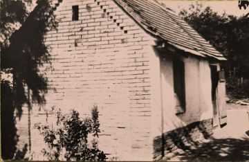
Kućica na kraju sela u Ritskoj Adi, stara praonica rublja, u kojoj je nekoliko godina živio s majkom i dvjema sestrama The little house at the end of the village in Ritska Ada, an old wash-house, where he lived for some years with his mother and two sisters
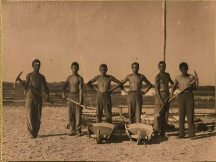
Mladići na radnoj akciji Young men on a voluntary work brigade
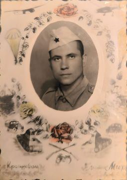
Vojnička fotografija u ukrasnom okviru An army portrait in a decorated frame
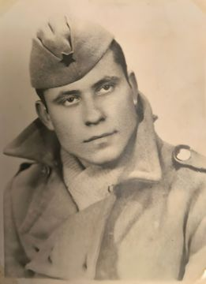
U vojsci In the army
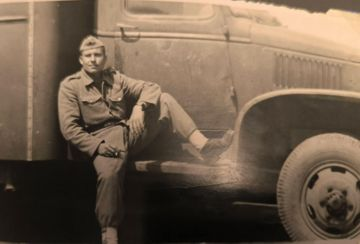
U vojsci, uz kamion In the army, by a truck
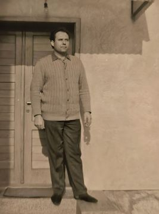
Kao mladić As a young man
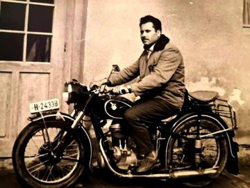
Na motociklu On his motorbike
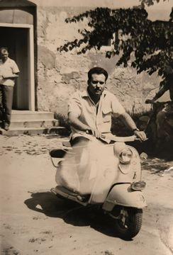
Na skuteru On a scooter
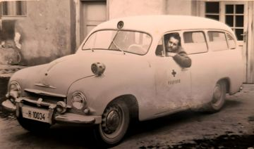
Za volanom vozila hitne pomoći Doma zdravlja Valpovo At the wheel of the Valpovo health centre's ambulance
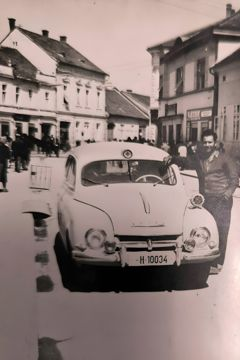
S automobilom u gradu With a car in town
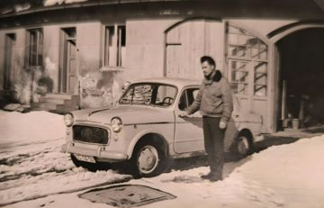
S automobilom u snijegu With a car in the snow
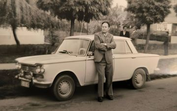
S automobilom uz park With a car by the park
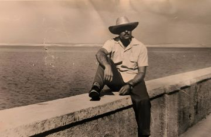
Na moru At the seaside
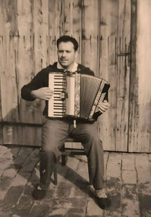
S harmonikom, koju je svirao za svoju dušu With his accordion, which he played for his own pleasure
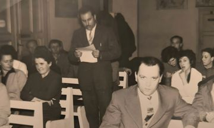
Čita svoje stihove na priredbi Reading his verse at a gathering
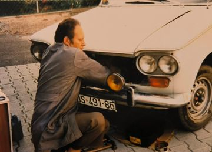
Popravlja automobil Working on a car
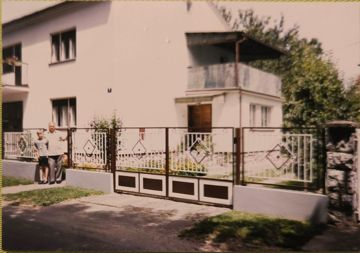
S unukom Denisom pred obiteljskom kućom u Valpovu With his grandson Denis in front of the family home in Valpovo
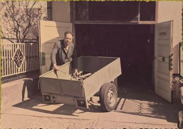
S prikolicom pred garažom With a trailer outside the garage
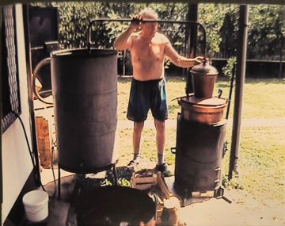
Peče rakiju Distilling rakija
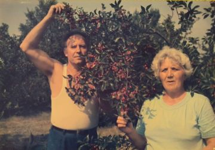
Sa suprugom Jelkom u voćnjaku With his wife Jelka in the orchard
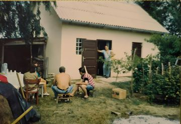
Ljetno druženje na vikendici A summer get-together at the weekend cottage
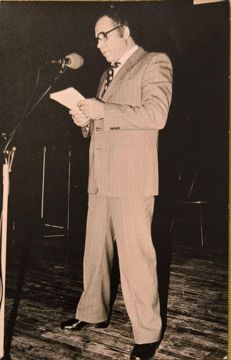
Na pozornici On stage
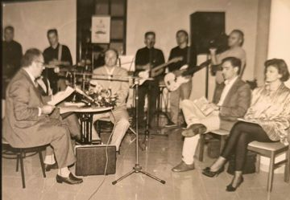
Čitanje uz glazbenu pratnju A reading with a band
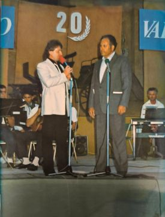
Na pozornici, na proslavi dvadesete obljetnice On stage at a twentieth-anniversary celebration
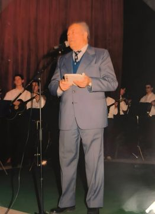
Za mikrofonom, uz tamburaše At the microphone, with the tambura players
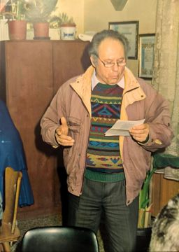
Čita pjesmu Reading a poem
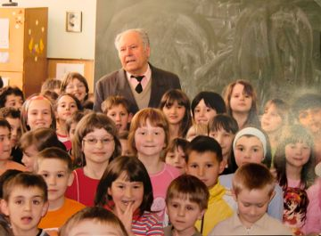
S učenicima u školi With pupils at a school
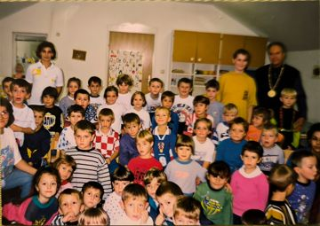
U posjetu vrtiću Visiting a kindergarten
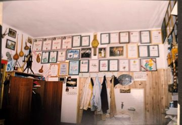
Zid u garaži, prepun uramljenih zahvalnica i priznanja The garage wall, hung with his framed certificates and awards
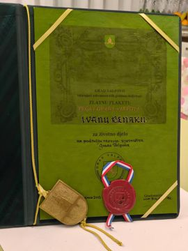
Zlatna plaketa „Pečat Grada Valpova“ za životno djelo, 3. prosinca 2012. The gold plaque “Seal of the Town of Valpovo” for lifetime achievement, December 3, 2012
Pjesnik
The poet

Za pisaćim strojem At his typewriter

U šokačkoj narodnoj nošnji, s knjigom In Šokac folk costume, with a book

Fotografija iz drugog izdanja Zekine sreće (2007.) The author photograph from the second edition of Bunny's Luck (2007)

Pred vratima svoje kuće u Valpovu, u nošnji At the door of his house in Valpovo, in folk costume

U šokačkoj nošnji In Šokac folk costume

U šokačkoj nošnji In Šokac folk costume

Na stubama svoje kuće On the steps of his house

Portret u vezenoj košulji Portrait in an embroidered shirt

Za radnim stolom kod kuće At his desk at home
Knjige
Books

Mali snovi, Vinkovci 1988. Little Dreams, Vinkovci 1988

Zekina sreća, Valpovo 1990. Bunny's Luck, Valpovo 1990

Zekina sreća, II. ilustrirano izdanje, 2007. Bunny's Luck, second illustrated edition, 2007

Valpovački bećarac, Vinkovci 1993. The Valpovo Bećarac, Vinkovci 1993

Odjeci srca, Valpovo 2001. Echoes of the Heart, Valpovo 2001

Žablji sastanak, Valpovo 2005. The Frogs' Meeting, Valpovo 2005

Naslovna ilustracija za Stihom kroz život (2010.) Cover illustration for Through Life in Verse (2010)

Destinacije Slavonije, vlastita naklada, 2013.: na naslovnici dvorac Prandau-Normann u Valpovu Destinations of Slavonia, self-published, 2013, with the Prandau-Normann castle in Valpovo on the cover
Ilustracije iz „Zekine sreće“
Illustrations from “Bunny's Luck”

Zekina sreća Bunny's Luck

Proljeće Spring

Znatiželja Curiosity

Crvenkapa Little Red Riding Hood

Baka i unuče Grandma and Grandchild

Tatina lutkica Daddy's Little Doll

Djeda Mraz Grandfather Frost

Kornjača The Tortoise

Ribar The Fisherman

Maslačak The Dandelion

Neposlušni vrabac The Naughty Sparrow

Šumski kralj King of the Forest
Priznanja i zahvalnice
Awards and certificates of thanks

Diploma HKUD-a „Valpovo 1905.“ Diploma of the Valpovo 1905 cultural society

Priznanje HKUD-a „Valpovo 1905.“ za 10 godina rada Award of the Valpovo 1905 society for ten years of work

Priznanje HKUD-a „Valpovo 1905.“ za 15 godina rada Award of the Valpovo 1905 society for fifteen years of work

Priznanje za sudjelovanje na „Ljetu valpovačkom“ Certificate for taking part in the Valpovo Summer festival

Zahvalnica manifestacije „Baranjski bećarac“, 2004. Certificate of thanks from the Baranjski bećarac festival, 2004

Zahvalnica Udruge pisaca i pjesnika „Sv. Mihovil“, Drenovci Certificate of thanks from the Sveti Mihovil writers' and poets' society, Drenovci

Zahvalnica Udruge za dijalog i nenasilje „Luč“ Certificate of thanks from the Luč association for dialogue and non-violence

Zahvalnica Udruge pisaca i pjesnika „Tin Ujević“, Gunja Certificate of thanks from the Tin Ujević writers' and poets' society, Gunja

Uspomena na „Susret pjesnika“, Golinci 2008. Keepsake from the Poets' Meeting in Golinci, 2008

Zahvala 28. sijela pučkih pisaca Slavonije, Baranje i Srijema Thanks from the 28th Folk Writers' Evening of Slavonia, Baranja and Srijem

Spomenica iz mađarskog grada Komla, 2005. Commemorative certificate from the Hungarian town of Komló, 2005
Druženja i nastupi
Gatherings and readings

Nastup u vrtiću na Nikolinje, 6. prosinca 2010. Reading at a kindergarten on St Nicholas Day, December 6, 2010

Nakon nastupa u vrtiću, 6. prosinca 2010. After the kindergarten reading, December 6, 2010

Zbor „Perunike“ iz Ivankova pjeva pred njegovom kućom, 18. rujna 2013. The Perunike choir from Ivankovo singing outside his house, September 18, 2013

„Perunike“ u gostima kod pjesnika The Perunike choir visiting the poet

Dar za pjesnika A gift for the poet

U sobi s njegovim zahvalnicama i diplomama In the room with his certificates and diplomas

Zid s priznanjima skupljenim tijekom desetljeća nastupa A wall of awards collected over decades of readings

Dio pjesnikove zbirke uspomena Part of the poet's collection of keepsakes

Obilazak Valpova, 2013. A tour of Valpovo, 2013

Sa suprugom Jelkom, 18. rujna 2013. With his wife Jelka, September 18, 2013